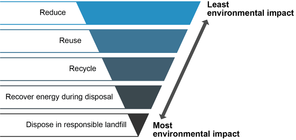

In order of environmental priority (most to least preferred):

Reducing resource use in the first place is the most responsible option. Companies can reduce by:
The reduce step is preventive, ideally implemented during the design and development phase of a product’s life cycle.
Recycle: Third most important. Turn used materials back into usable raw materials. Problems: regional regulatory differences create diseconomies of scale; recycling infrastructure not always available (e.g., lithium-ion batteries).
Recover energy: Disposal with energy recovery (incineration with energy capture) doesn’t return physical materials to service but still provides value compared to landfill.
Hazardous materials include: chemicals, wastewater, agricultural/human waste and sewage, radioactive materials, construction materials, industrial oils. Special transportation, storage, and disposal methods are required by regulation.
GHS (Globally Harmonized System):
EU Regulations:
Click card to flip · Use arrows or shuffle to practise